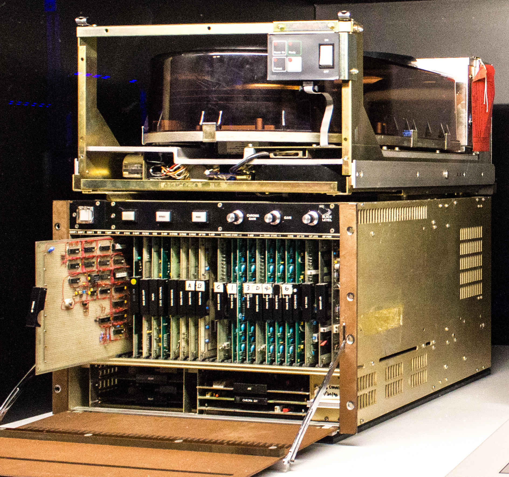
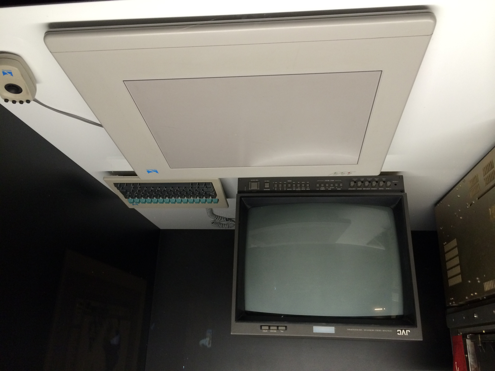
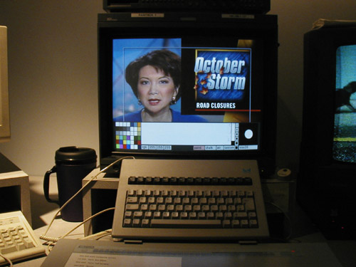

Quantel Paintbox
The $250,000 broadcast graphics workstation that put a pressure-sensitive stylus in the hands of TV artists and defined the look of 1980s television.

Overview
The Quantel Paintbox was a dedicated broadcast television graphics workstation released in 1981 by the British company Quantel (QUANtized TELevision). Priced at $250,000 (roughly $900,000 in 2025), it was a 24-bit, true-color, real-time digital painting system built entirely in hardware — effectively a room-sized accelerated graphics card — using a Motorola 68000 CPU and hundreds of custom-programmed ICs. Its defining HCI innovation was a patented pressure-sensitive stylus and drawing tablet: artists could paint, airbrush, and blend colors with natural pressure control, using pop-up menus summoned by a flick of the pen. This was the first time a pressure-sensitive stylus existed for computer interaction.
The Paintbox launched at the 1981 NAB Show in Las Vegas. The Weather Channel was its first U.S. customer (serial #1), replacing stick-on weather symbols with digital maps. Within five years, the Paintbox was producing virtually all on-screen television graphics globally — news graphics (NBC, ABC, CBS), weather maps (BBC, using Paintboxes controlled via Apple Lisa computers), sports overlays, title sequences, music videos, and pop-promo graphics. MTV launched the same year and its entire visual identity was built on Paintbox output.
Artist Martin Holbrook worked with Quantel's engineers to design the user interface, which remained virtually unchanged for 15 years. He was the first to complain of 'Tennis Neck' from looking between screens, which led directly to the invention of pop-up menu overlays on the working display. The system required no computer knowledge: traditionally trained illustrators could sit down and paint within minutes, as demonstrated when 80-year-old Sir Hugh Casson produced a finished painting after 30 minutes of instruction.
The Paintbox also had a high-resolution Graphic Paintbox variant used for print — creating album covers for Queen's 'The Miracle', Nirvana's 'Nevermind', Beastie Boys' 'Paul's Boutique', and movie posters for The Silence of the Lambs and JFK — five years before Photoshop existed. Quantel later sued Adobe for patent infringement of Paintbox features in Photoshop, losing in 1997 when Alvy Ray Smith and Richard Shoup demonstrated prior art from the 1970s SuperPaint system.
Of the hundreds sold worldwide, only two original DPB-7001 series machines survive today, and roughly 22 units of all Paintbox versions are known to exist, about a dozen in working order.
Deep dive
The Paintbox's most significant HCI innovation was the pressure-sensitive stylus and tablet — something that literally did not exist before the Paintbox. Quantel's engineers developed a touch-tablet and pen rather than using a mouse, driven by the insight that artists needed to control the opacity and flow of digital paint in the same natural way they controlled physical brushes. The stylus detected pressure and translated it into variable opacity, brush size, and paint flow. Colors actually mixed on the canvas — digital paint blended with existing colors just like oil or acrylic. The tablet surface was used only as a position input; artists quickly learned to look at the screen rather than the tablet, establishing the eye-screen/hand-tablet separation that is now standard for all graphics tablets. Pop-up menus were invoked by flicking the pen, replacing the older system of physical menus printed on the tablet surface. Quantel held international patents on this pressure-sensitive stylus technology, which were later cited in their 1990s lawsuit against Adobe over Photoshop's brush tools.
The Paintbox was a 24-bit (8 bits per RGB channel) true-color system producing broadcast-quality PAL (DPB-7001) or NTSC (DPB-7000) video output in real time. It used a Motorola 68000 CPU and was built around hundreds of SSI logic ICs held together by custom-programmed PALs (Programmable Array Logic ICs). The only way Quantel's engineers could make a painting system fast enough to keep up with an artist's natural hand movements was to move all creative functions — brushes, paint mixing, stenciling, cut-and-paste — into dedicated hardware. The Paintbox was effectively a giant accelerated graphics card. The hard drive was a Fujitsu M2294 'Eagle' — a 14-inch Winchester drive weighing over 100 pounds that stored only 335 MB (roughly 6 seconds of uncompressed SD video). Operators had to constantly copy work onto magnetic tapes to free drive space. The original 1981 machines had a dedicated framestore, stencils and layers (added 1982), and digital font/text functions (by Pepper Howard, 1983). The second-generation V-Series (1989) replaced SSI logic with Altera CPLD and FPGA ICs, added a cordless stylus, better tablet, upgraded keyboard, and cost $80,000–$100,000.
Before the Paintbox, TV graphics were produced by hand — artists drew on paper, which was then filmed and digitized. The Paintbox collapsed a two-day graphic production cycle into 15 minutes. Roger Goodman, ABC's director of production development, told The New York Times in 1984: 'It used to be that we had a staff of artists who drew and drew. But with the Paintbox an artist can come up with a graphic in 15 minutes that used to take two days.' By the mid-1980s, most graphics and visual effects on TV worldwide were created on a Paintbox. It defined the 1980s TV aesthetic: saturated colors, chrome gradients, flying logos — a look that became synonymous with the decade. Design critic Glenn Adamson noted the Paintbox's influence was simultaneous with MTV (which also launched in 1981), and that together they created the visual language of 1980s pop culture. BBC weather presenters stood in front of chroma-key screens and used clickers to advance Paintbox-created slides stored on Apple Lisa computers. NBC Nightly News, CBS Evening News, and ABC Sports all built their on-air graphics around the Paintbox. The system was used for the 1984 Los Angeles Olympics broadcast graphics, Doctor Who special effects, Top of the Pops titles, and countless TV commercials.
Early Paintbox users were not artists but broadcast technicians, due to union rules that only allowed engineers to operate the expensive equipment. This explains why early 1980s TV graphics often looked gaudy and same-y — they were made by people mesmerized by the technology, not by trained designers. As the technology matured, independent 'operators' emerged who were paid $500/hour — an extraordinary rate for the era. But training was scarce: unless you worked at a major network or post-production house, there was no way to learn. Creator Martin Holbrook himself left Quantel in 1986 to open his own post-production company in SoHo. Quantel gave three Paintboxes to UK art schools in the mid-1980s to broaden access to the tool. The machines ran 24/7 in post-production facilities, booked solid by advertising agencies and broadcast clients. This created a fascinating HCI dynamic: an interface so intuitive that non-computer-users could create professional work, but access was gate-kept by price, unions, and scarce training — a pattern that would repeat with later professional creative tools.
In 1985, Quantel developed the Graphic Paintbox, a higher-resolution print-quality variant that revolutionized the photo manipulation industry five years before Photoshop. It was used for the photo-composite album covers of Queen's 'The Miracle' (1989), Nirvana's 'Nevermind', and Beastie Boys' 'Paul's Boutique', plus movie posters for The Silence of the Lambs and JFK. When Adobe launched Photoshop in 1990, Quantel sued for patent infringement, claiming Photoshop used Paintbox's patented features — including the pressure-sensitive stylus digital painting system. Quantel won a 1990 case against Spaceward's Matisse (a cheaper Paintbox clone) in London's High Court. But against Adobe in 1997, Quantel lost. Alvy Ray Smith (co-founder of Pixar, creator of the first 24-bit RGB paint system Paint3 in 1977) testified that he had seen the Paintbox at NAB and immediately recognized it as a hardware implementation of Dick Shoup's SuperPaint concepts from 1973. A photograph was produced in court proving that digital airbrush features Quantel claimed to have invented predated the Paintbox at Smith's NYIT lab. The Delaware judge invalidated all five of Quantel's U.S. patents, clearing Adobe. The case is a landmark in HCI intellectual property history — and a demonstration that software/hardware patents on interaction techniques are fragile against prior art from the research community.
The Paintbox attracted major fine artists. David Hockney created his first digital art on a Paintbox in June 1985, calling them 'colored glass drawings' and describing the experience as 'painting with light on glass.' He said the colors had 'an almost neon glow' impossible in any other medium. Richard Hamilton, Howard Hodgkin, Larry Rivers, Sidney Nolan, and Jennifer Bartlett all created original works on the Paintbox for the BBC series 'Painting with Light' (1987). Quantel employed a hundred digital artists by the late 1980s to improve and demonstrate Paintbox features. The Computer Arts Society held a 50th anniversary Quantel Paintbox exhibition in 2023, curated by Adrian Wilson. The Dire Straits music video 'Money for Nothing' (1985) used Paintbox backgrounds and textures alongside a Bosch FGS-4000 3D system; it won MTV's first-ever Video of the Year award. Of the hundreds of Paintboxes sold, only two original DPB-7001 series machines survive — one in a museum, one privately restored. Approximately 22 total units of all versions are known, with about a dozen in working order — making surviving machines extraordinarily rare artifacts of professional creative HCI.
Team & pioneers
- Sir Peter Michael. Founder of Quantel (1973); previously founded Micro Consultants Group. Knighted in 1989. Also founded Cosworth Engineering, Classic FM radio, and the Peter Michael Winery.
- Richard Taylor OBE. Chairman of Quantel from 1975 until 2005; led the company through its golden age of Paintbox, Harry, Henry, and iQ product lines. Died 2009.
- Paul Kellar MBE. Quantel Research Director; instrumental in many of Quantel's technical breakthroughs including the Paintbox architecture, digital framestore technology, and dynamic rounding.
- Martin Holbrook. Professional illustrator who worked with Quantel's development team to design the artist-oriented Paintbox interface. Demonstrated the prototype at the 1981 NAB launch. His complaint about 'Tennis Neck' from looking between two screens led to the pop-up menu system. Left Quantel in 1986 to open his own post-production company.
- Ian Walker. Undertook the original research and computer simulations of artist tools (brushes, paint, chalk) that were later transferred to hardware for the Paintbox.
- Bob Pank. Product manager at Quantel during the Paintbox era; later wrote a retrospective on the Paintbox's creation for the 30th anniversary.
- Pepper Howard. Implemented the font and text functions for the Paintbox in 1983, bringing typography into broadcast graphics for the first time.
- Anthony Stalley & John Coffey. Co-founders of Quantel alongside Peter Michael in 1973. The name 'Quantel' was coined by Peter Owen's wife Rhiannon over breakfast, derived from 'Quantised Television.'
Media



Sources
- Quantel Paintbox - Wikipedia
- How Quantel's Paintbox Revolutionized TV Graphics 40 Years Ago — TV Technology (Adrian Wilson, 2021)
- Quantel Paintbox History: The Stylus That Revolutionized Television — Tedium (David Buck, 2022)
- The Quantel Paintbox — a pioneering computer graphics workstation (Bob Pank, Quantel blog, 2011, archived)
- Quantel - Wikipedia (company history, founders, product timeline)
- Peter Michael (engineer) - Wikipedia
- Quantel Digital Paintbox 7001 — Powerhouse Museum Collection (Sydney)
- The Big Box of Magic: A Love Letter to the Quantel Paintbox — UX Planet (Mat Venn, 2022)
- Quantel Paintbox — Computer Arts Society Exhibition Catalogue (2023)
- Paintbox: Art x Engineering — Google Arts & Culture / Museum of Engineering Innovation